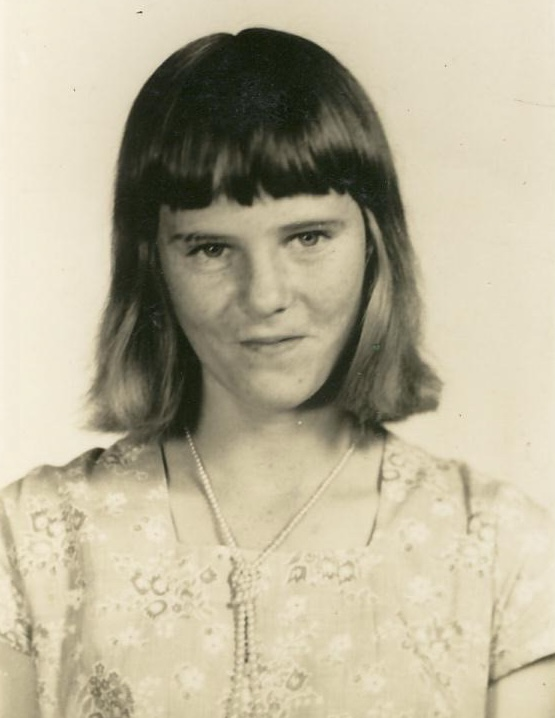

Evelyn Herrin
1934–2011

Life Events
Born: September 14, 1934 — Pearson, Atkinson, Georgia, United States
Died: February 19, 2011 — Florida, United States
Family
Father: William Levi Herrin Sr.
Mother: Laura Etta Palmer
Siblings
Military Service
No military service information has been added.
Biography
Evelyn Herrin was born on September 14, 1934, in Pearson, Atkinson County, Georgia.
She was a daughter of William Levi Herrin and Laura Etta Palmer. She died on February 19, 2011, in Florida.
Photos
Family photographs will be added here.
Sources
No sources have been added yet.